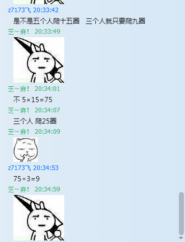

[转寄/推荐][转贴][删除][修改][设置可RE属性][上一篇][返回讨论区][下一篇][回文章][同主题列表][同主题阅读][从这里展开]
发信人: WiniM(WiniM), 信区: outdoor 标 题: Re: 十一太白训练-20160910 发信站: 饮水思源 (2016年09月16日11:31:12 星期五)  screen.width - 200){this.width = screen.width - 200}"> |

[转寄/推荐][转贴][删除][修改][设置可RE属性][上一篇][返回讨论区][下一篇][回文章][同主题列表][同主题阅读][从这里展开]